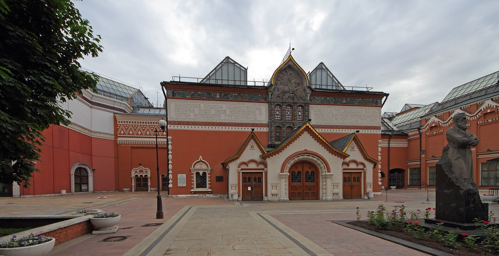

Выходные в Москве
Маршрут на день | Зарядье | Третьяковская галерея
Третьяковская галерея | Музей Москвы

В историческом здании в Лаврушинском переулке представлено русское искусство. Выберите несколько интересных вам работ и рассмотрите их подробнее.
Адрес: Лаврушинский переулок, 10.
Наш план: 2-3 часа на выбранную часть экспозиции.
Место для тех, кому хочется лучше понять город, в котором они живут. На сайте музея можно выбрать выставку или городскую экскурсию.
Адрес: Зубовский бульвар, 2.
Наш план: 1,5-2 часа на одну выставку.
Текущие выставки и экскурсии ↗Расписание, цены и льготы можно уточнить на официальном сайте музея.